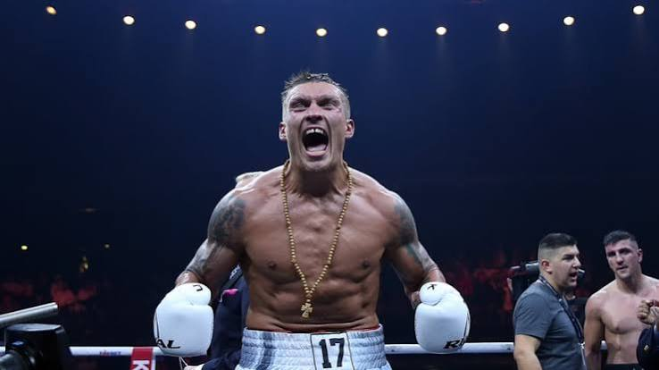

Біографія чемпіона

Олександр Олександрович Усик (нар. 17 січня 1987, Сімферополь, Україна) — видатний український боксер-професіонал. Він є абсолютним чемпіоном світу у важкій (2018—2019) та надважкій вазі (2024), що робить його одним із найвидатніших бійців в історії світового боксу.
Свій шлях у спорті він починав з футболу, граючи за юнацьку команду «Таврія», але згодом перейшов у бокс. В аматорському боксі Олександр досяг неймовірних вершин, ставши чемпіоном Європи (2008), чемпіоном світу (2011) та Олімпійським чемпіоном 2012 року в Лондоні. Його переможний гопак після фінального бою на Олімпіаді став легендарним.
Після переходу в професіонали у 2013 році, Усик швидко підкорив світовий ринг. Він став переможцем першого сезону Всесвітньої боксерської суперсерії (WBSS), здобувши престижний Кубок Мухаммеда Алі. Перейшовши у надважку вагу, Олександр сенсаційно переміг Ентоні Джошуа, а згодом — Тайсона Ф'юрі, об'єднавши всі головні чемпіонські пояси: WBA, WBO, IBF, IBO та WBC.
Ключові дати життя
| Рік | Подія |
|---|---|
| 1987 | Народження в Сімферополі |
| 2012 | Золото на Олімпійських іграх у Лондоні |
| 2018 | Став абсолютним чемпіоном світу у першій важкій вазі |
| 2021 | Перемога над Ентоні Джошуа (чемпіон у надважкій вазі) |
| 2024 | Перемога над Тайсоном Ф'юрі (абсолютний чемпіон у надважкій вазі) |
Головні досягнення
- Абсолютний чемпіон світу в першій важкій вазі.
- Абсолютний чемпіон світу в надважкій вазі.
- Переможець першого сезону Всесвітньої боксерської суперсерії (WBSS).
Цитата
Я не боксую за гроші чи славу. Я боксую, щоб залишити спадщину в історії спорту.
Олександр Усик